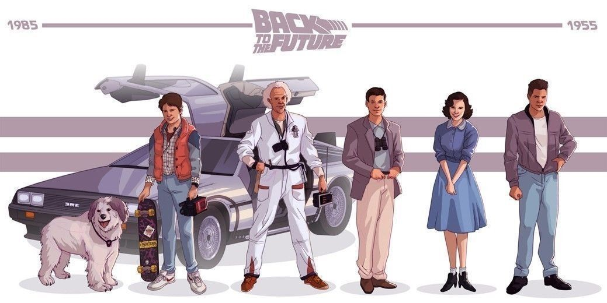

REGRESO AL FUTURO
Inicio
Argumento
Concepción
Videojuegos
Reparto
Banda Sonora
Premios
Reparto
Michael J. Fox
Christopher Lloyd
Crispin Glover
Lea Thompson
Thomas F. Wilson
Imágenes importantes del Reparto de Los Soprano
